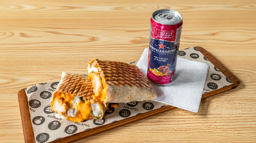
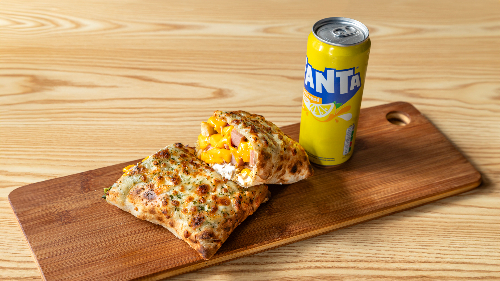

Restauration rapide · Lyon 7e
Le Tacos Lyonnais Saxe
Trois directions artistiques pour le même restaurant. Chaque version est entièrement fonctionnelle — menu, panier et configurateur de tacos. Choisissez celle qui vous parle le plus.

Version 1 La Carte
Style « carte de commande »
Interface claire et efficace : barre latérale infos resto, menu en accordéon par catégorie, panier coulissant.
Panier + quantitésHoraires en directAccordéon
Voir la démo
 Version 2
Classique
Version 2
Classique
Restaurant élégant blanc & bordeaux
Ambiance soignée et chaleureuse, grande photo hero. Configurateur de tacos sur mesure en 5 étapes.
Compose ton tacosPanier + quantitésHero photo
Voir la démo

Version 3 Streetfood
Dark mode néon urbain
Look immersif et impactant, ambiance street food. Configurateur gamifié avec prix dynamique en temps réel.
Dark modeBuilder gamifiéPrix dynamique
Voir la démo